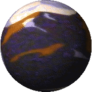

NPS WEBCAM GIFS
Black Canyon of the Gunnison - blca_sr webcam
Devils Tower National Monument - deto3 webcam
Devils Tower National Monument - deto5 webcam
Glacier Bay National Park & Preserve - bartlettlagoon webcam
Hawaii Volcanoes National Park - USGS kw webcam
Hawaii Volcanoes National Park - USGS m3 webcam
Hawaii Volcanoes National Park - USGS ml webcam
Mount Rainier National Park - mountain webcam
Yellowstone National Park - lake webcam
Yellowstone National Park - washburnne webcam
Yosemite National Park - sentinel webcam